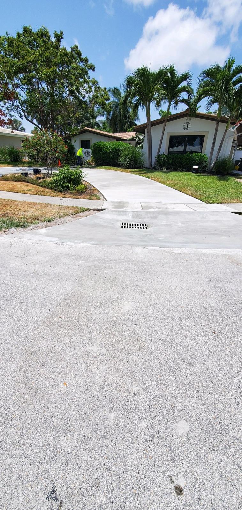
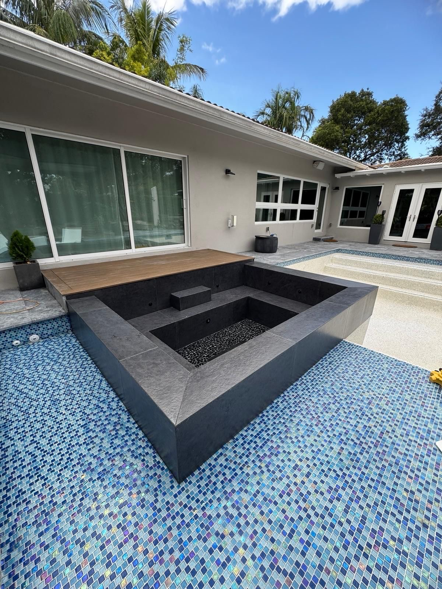
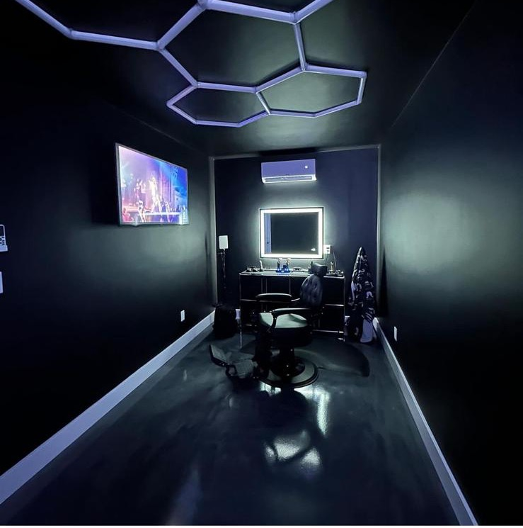
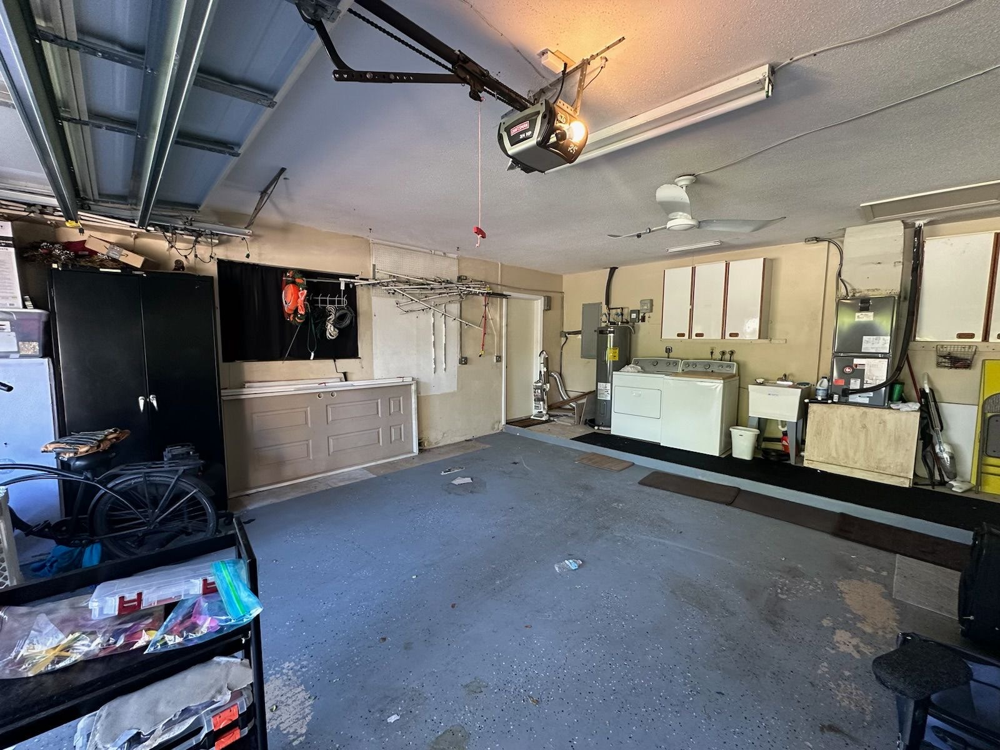
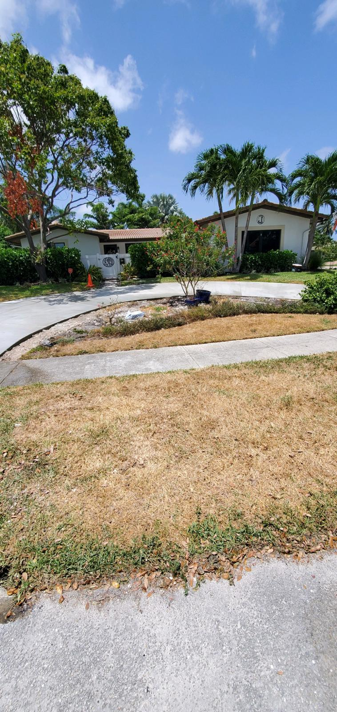
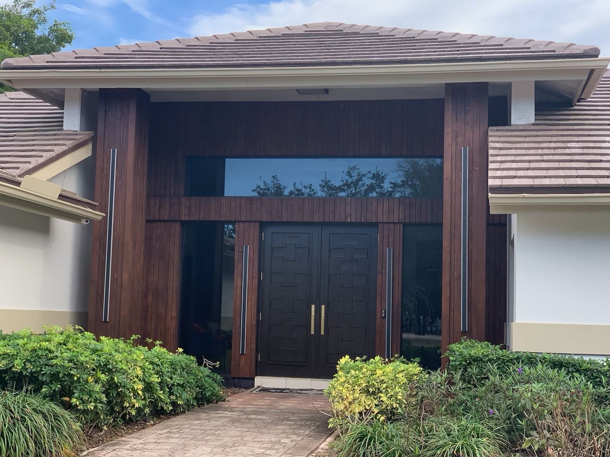
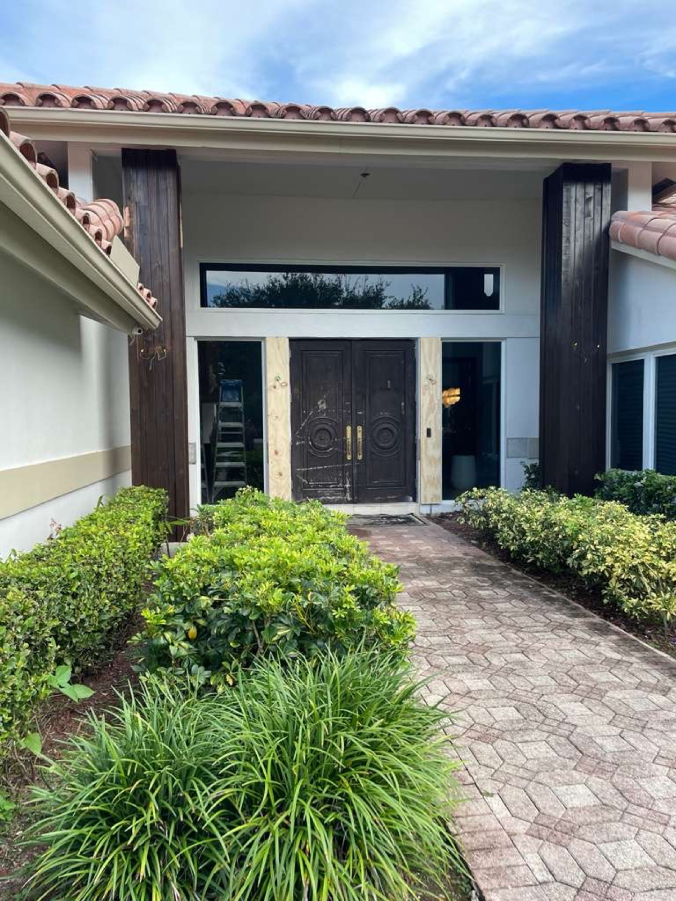
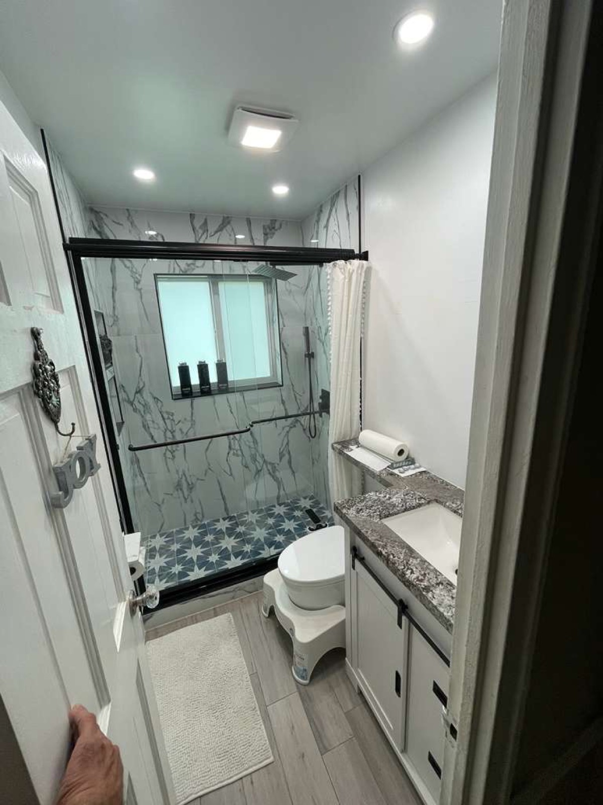
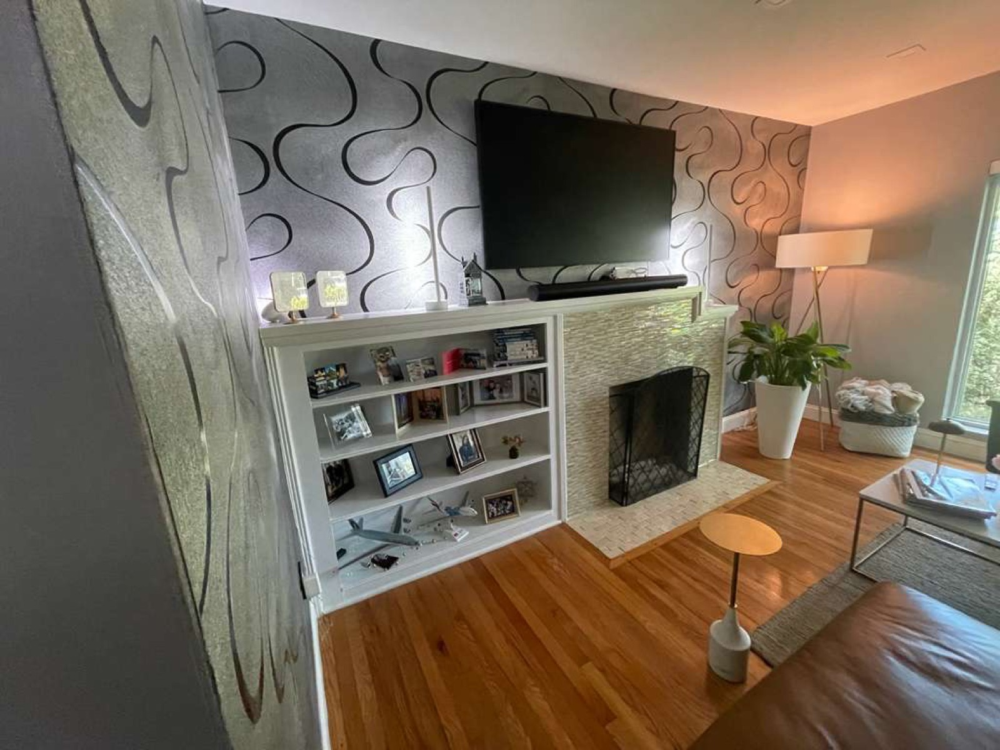
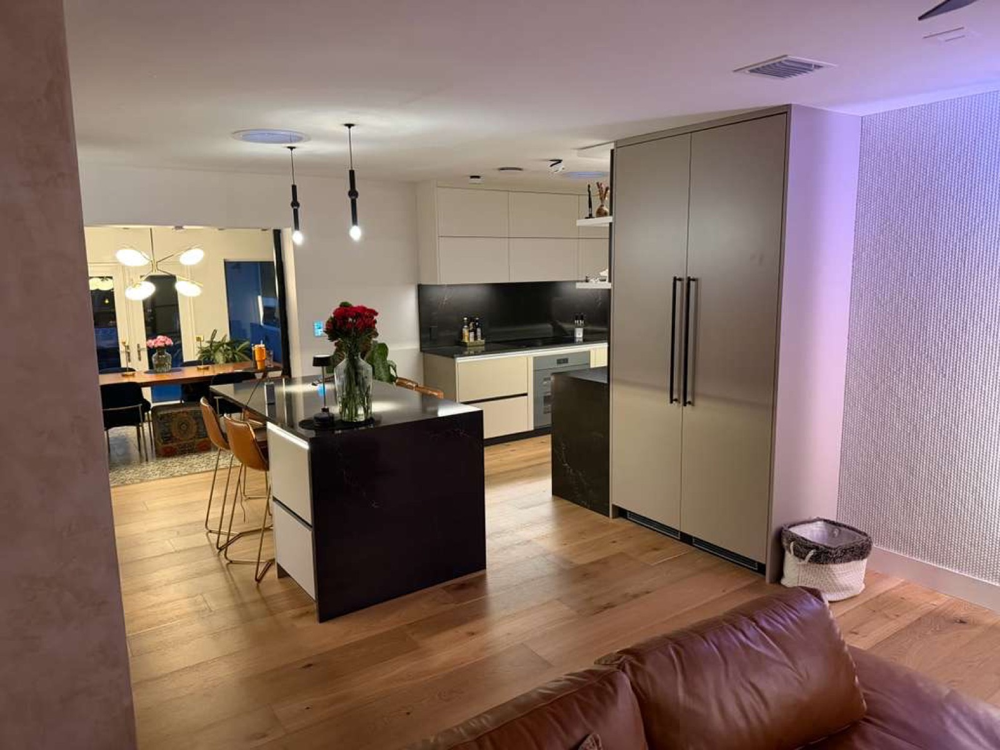

Interior design and renovation, from concept to final walkthrough.
New Season Design transforms Miami and Broward homes — kitchens, baths, and whole-space renovations — with one accountable team managing every decision and detail until the work is done.
Great design still depends on how the work actually gets done.
A great kitchen or bath is only as good as the work behind it. NSD brings the design decisions, the trades, and the schedule under one roof, so the finish you approved is the finish you get — with one point of contact the whole way through.

01ONE ACCOUNTABLE POINT OF CONTACT.
02THE RIGHT SPECIALISTS FOR EACH PHASE.
03CLEAR APPROVAL BEFORE ADDED WORK.
04A FINAL WALKTHROUGH BEFORE COMPLETION.

New Season Design turns an approved vision into a finished space — the cabinetry, the tile, the fixtures, the details that make a room feel finished. We keep decisions and trade coordination aligned at every step, so you always know where the project stands and what comes next.
COMPLETED PROJECTS
Real project changes, shown room by room.
These before-and-after pairs come from completed New Season Design work. They show the practical decisions behind each room: what changed, what stayed, and how the approved direction carried through. Some images are enhanced for lighting and presentation.
Pool & spa — bare shell to a finished mosaic build.Tiled, filled, and balanced into a glass-mosaic spa with a sunken lounge ledge.
BeforeAfter
⇆
Kitchen — dated oak to white shaker.Same room and window; updated cabinetry, backsplash, and appliances.
BeforeAfter
⇆
Kitchen — dark teal to bright shaker + glass mosaic.Same room and chandelier; lighter cabinetry and a new backsplash.
BeforeAfter
⇆
Kitchen — honey oak refaced to shaker, new flooring.Refaced cabinetry, retained counters, and new flooring.
BeforeAfter
⇆
Bath — garden tub to a walk-in shower.The tub was replaced with a walk-in shower and updated finishes.
BeforeAfter
⇆
Bath — dated blue to botanical tile + gold glass.Updated vanity, flooring, and botanical-pattern shower walls.
BeforeAfter
⇆
Bath — yellow tile to travertine walk-in.The tub and carpet gave way to a tiled walk-in shower and updated vanity.


BeforeAfter
⇆
Garage — cluttered storage to a barbershop studio.Framed, drywalled, and finished with epoxy flooring and a custom lighting install.

BeforeAfter
⇆
Driveway & walkway — cracked concrete to a fresh pour.The same walkway and driveway apron, resurfaced with new concrete.


DuringAfter
⇆
Entryway — raw construction to a finished grand entrance.Columns and double doors refinished, with new gold hardware and transom glass.
Finished work
White quartz island kitchenEmerald-tile designer kitchenMarble-slab shower, navy vanity

Compact guest bath

Custom built-in & fireplace

Full condo remodel
Completed New Season Design projects. Some images are enhanced for lighting and presentation.
RANGE OF WORK
Completed work across kitchens, baths, great rooms, and outdoor living.
These are finished New Season Design projects, not concept renderings. They show the range of rooms and finishes we deliver, from first plan through final walkthrough.
Completed New Season Design projects. Some images are enhanced for lighting and presentation.
THE NEW SEASON STORY
Accountability starts with understanding the homeowner's side.
New Season Design exists to take the guesswork out of a major renovation. We define the plan, bring in the right specialists for each phase, and stand behind the work through the final walkthrough — with honest expectations and direct communication at every step. The company grew out of Cheo and Ginny's own handyman and remodeling work in Miami and Broward, started in 2021, and that same standard — say what will happen, then do it — still guides every project today.
That standard still guides the work: honest expectations, timely communication, and a direct answer when something needs attention.
THE NEW SEASON PROCESS
A working plan from first conversation through completion.
We coordinate the moving parts and keep you informed. You keep the project moving with timely decisions, approvals, access, and communication.
01
Define the Plan
We listen to your goals, clarify priorities and known constraints, and align the scope with the budget you approve.
02
Bring In the Right Craftspeople
The craftspeople may change as the work changes. NSD remains your link to the work and keeps every phase connected to the plan.
03
Keep Changes Clear
If we uncover a concealed condition—or you request a change—we pause, explain the effect on scope, schedule, and cost, and get your approval before added work begins.
04
Walk It With You
Before we call the project complete, we complete a final walkthrough with you and address the agreed items that still need attention.
THE ACCOUNTABILITY STANDARD
When something changes, you should hear it from us first.
Remodels can reveal conditions no one could see at the start. The difference is how those moments are handled. We explain what changed, outline the impact, and ask for your approval before added work proceeds. We do not pass responsibility down the chain; we remain responsible for the communication and follow-through.
THE NEW SEASON EXPERIENCE
You should always know who is responsible and what comes next.
The experience we are responsible for is practical: defined expectations before work begins, timely updates while it is underway, and an agreed review before completion.
01
Your goals, priorities, known constraints, and approved scope are clear before work begins.
Before Work BeginsA shared plan
02
You communicate with NSD instead of chasing each trade for separate answers.
Throughout the RemodelOne route for questions
The Right SpecialistCoordinated for each phase
Specialists can change. The coordinated plan does not.
03
Schedule updates, decisions, and open questions are communicated in plain language.
As Work ProgressesClear, proactive updates
04
Potential cost or scope changes are explained before additional work proceeds.
When Conditions ChangeApproval before added work
05
We walk the finished project with you and address the agreed items that still need attention.
Before CompletionFinal walkthrough
FAQ
Straight Answers Before You Begin
How we work, how changes are handled, and what we need from each other.
NSD is an interior design and renovation company built around accountability. We define the plan, coordinate the right specialists for each phase, and represent your interests across the project — keeping decisions and communication connected from the first conversation through project closeout.
We work from the scope and budget you approve. If we uncover something that couldn't be seen earlier—or you ask to change the plan—we pause, explain the effect on cost and schedule, and get your approval before the additional work begins.
Not necessarily. Different phases call for different craftspeople, and the right people may change as the work changes. Your contact at NSD and the coordinated plan do not. We manage those handoffs so you do not have to chase down each trade yourself.
We start by discussing your goals, current plans, location, timing, and the support you are looking for. If there is a fit, we explain the next step and define the engagement before you commit.
Cheo and his wife, Ginny, began with handyman work in 2021. As that work grew into full remodeling and project coordination, he saw how poorly managed communication and split responsibility could affect homeowners. NSD was built to provide straightforward expectations and a more consistent client experience.
We do not pass responsibility down the chain. We explain the issue, coordinate the next step, and keep you informed. Before the project is called complete, we walk it with you and address the agreed items that still need attention.
A successful project still depends on timely homeowner decisions, approvals, access, and communication. We make the choices and their impact clear so you can respond with confidence and keep the coordinated plan moving.
NSD is built for substantial interior renovations across Miami and Broward — kitchens, baths, and whole-space transformations that benefit from coordinated trades and hands-on management. The consultation is where we confirm the project type, scope, timing, and whether NSD is the right fit for you.